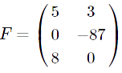

«Матрицы. Виды матриц. Основные термины.»
Определение.
Матрицей размера
m×n называется прямоугольная таблица специального вида, состоящая из
n строк и
m столбцов, заполненная числами.
Количество строк и столбцов задают размеры матрицы.
Элементами матрицы могут быть объекты совершенно разнообразной природы: числа, переменные или, к примеру, иные матрицы.
Формы записи матриц.
Матрица может быть записана не только в круглых, но и в квадратных или двойных прямых скобках. Т.е., указанные ниже записи означают одну и ту же матрицу:
Произведение m×n называют размером матрицы. Например, если матрица содержит 5 строк и 3 столбца, то говорят о матрице размера 5x3.
Матрица
имеет размер 3x2.
Обозначение матриц.
Обычно матрицы обозначаются большими буквами латинского алфавита: A, B, C и так далее. Например:
Нумерация строк идёт сверху вниз; столбцов – слева направо. Например, первая строка матрицы B содержит элементы 5 и 3, а второй столбец содержит элементы 3, -87, 0.
Элементы матриц обычно обозначаются маленькими буквами. Например, элементы матрицы A обозначаются aij.
Двойной индекс ij содержит информацию о положении элемента в матрице:
Число i - это номер строки;
Число j - это номер столбца.
на пересечении
i строки и
j столбца находится элемент
aij.
Пример.
На пересечении второй строки и пятого столбца матрицы
расположен элемент a25=59:
Точно так же на пересечении первой строки и первого столбца имеем элемент a11=51; на пересечении третьей строки и второго столбца - элемент a32=-15 и так далее.
Сокращённое обозначение.
Для сокращённого обозначения матрицы A, размер которой равен m×n, используется запись Am×n . Можно записать несколько более развернуто
где запись ( ai×j ) означает обозначение элементов матрицы A.
В полностью развёрнутом виде матрицу Am×n= ( aij ) можно записать в виде
Равные матрицы.
Две матрицы одинакового размера Am×n= ( aij ) и Bm×n= ( bij ) называются равными , если их соответствующие элементы равны, т.е. ( aij ) = ( bij ) для всех i=1,2...m и j=1,2...m
Итак, для равенства матриц требуется выполнение двух условий:
- Совпадение размеров;
- Равенство соответсвующих элементов.
Например, матрица не равна матрице
 поскольку матрица A имеет размер 3×2 , а размер матрицы B составляет 2×2.
поскольку матрица A имеет размер 3×2 , а размер матрицы B составляет 2×2.
Для матрицы  можно записать A = M поскольку и размеры, и соответствующие элементы матриц A и M совпадают.
Пример №1.
Определить размер матрицы
. Указать, чему равны элементы
a12, a33, a43 .
Решение:
Данная матрица содержит 5 строк и 3 столбца, поэтому размер её 5×3. Для этой матрицы можно использовать также обозначение A5×3.
Элемент a12 находится на пересечении первой строки и второго столбца, поэтому a12= -2. Элемент a33 находится на пересечении первой строки и второго столбца, поэтому a33= 23. Элемент a43 находится на пересечении первой строки и второго столбца, поэтому a43= -5.
Ответ:
a12 = -2,
a33 = 23,
a43 = -5.